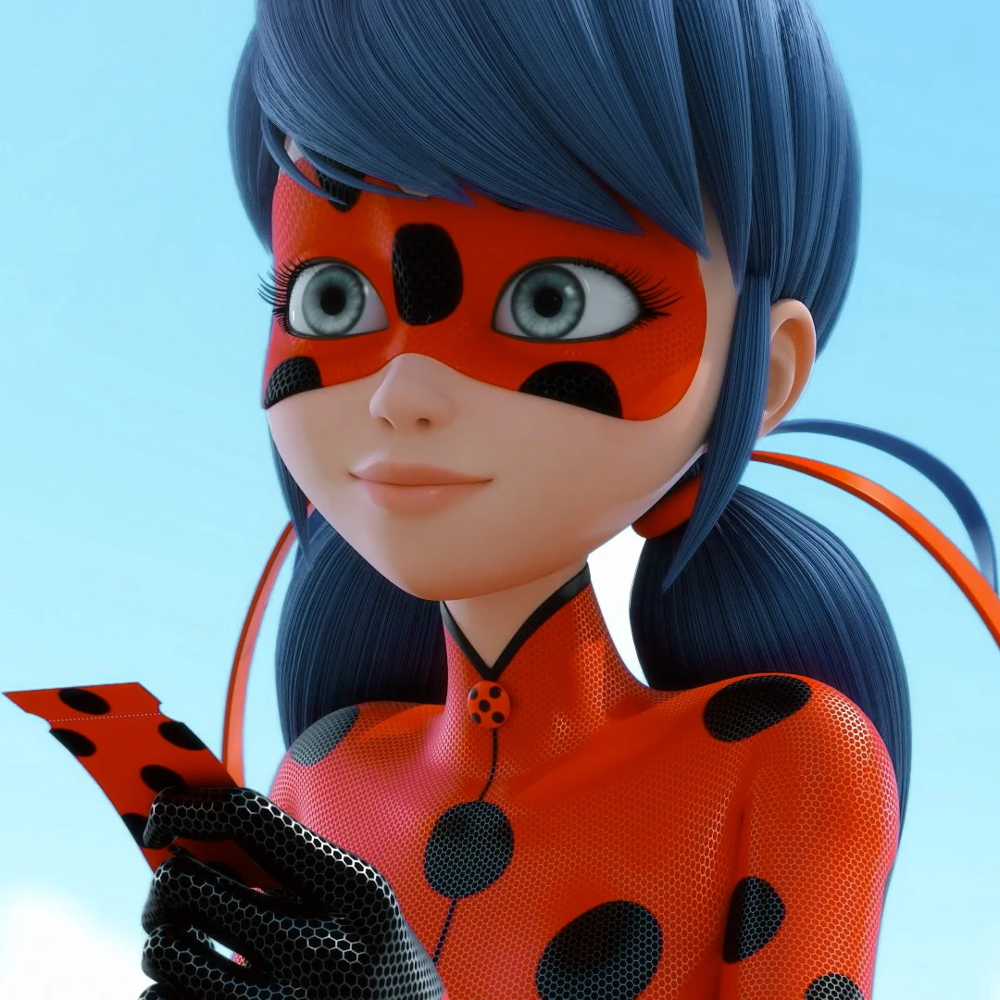
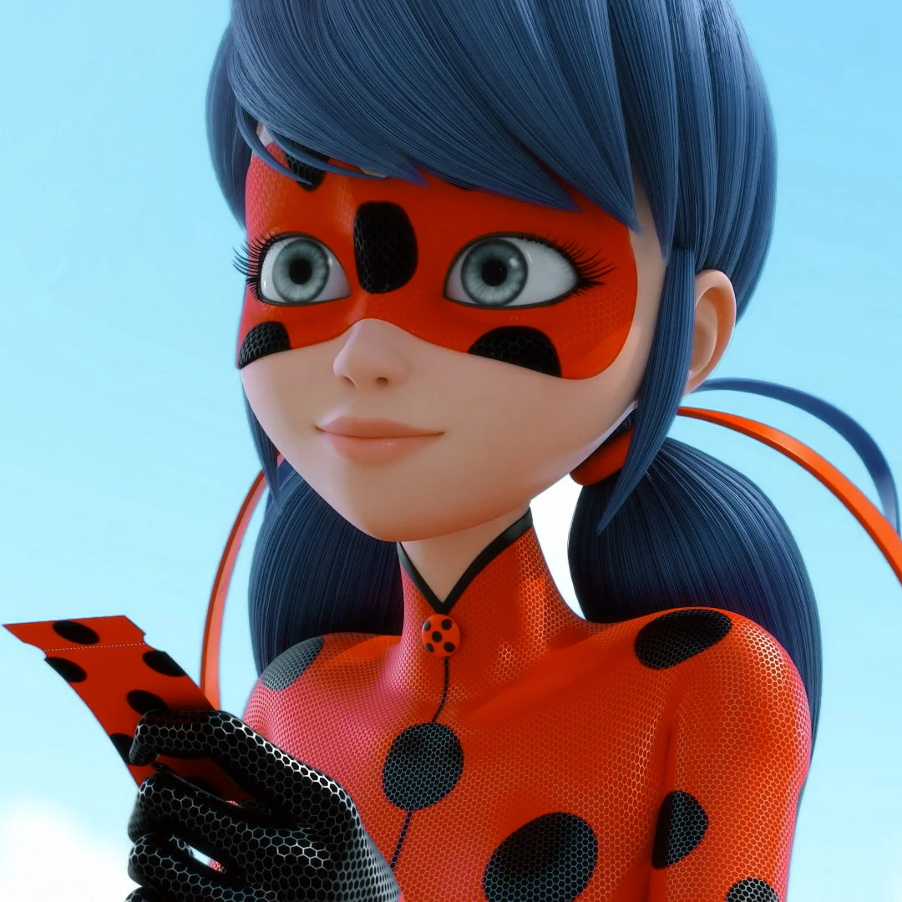

O que são os miraculous?
São joias magicas criadas ha mais de 5000 mil anos atras por um mago chines
,nelas habitam os kwamis que são criaturas magicas que mantem a conexao com o mundo humano atraves dos miraculous,eles sao criados
apartir de cada novo conceito criado no universo
Existem diversos miraculous no mundo,como o brinco da joaninha que habita Tikki o kwami que surgiu do poder da criacao,sua arma
e um ioio,e seus poderes sao o talisma,o miraculous ladybug e outras habilidades extras como por exemplo a purificacao de akumas e amoks que sao
criados por outros miraculous
Poderes dos miraculous
Com palavras magicas,o portador do miraculous se funde ao kwami,ganhando uma arma especial, um uniforme quantico,habilidades aprimoradas e poderes unicos de cada kwami

 

Principais miraculous
Os principais miraculous sao o miraculous da joaninha juntamente com o miracuklous do gato que fornecem respectitivamente o poder da criacao e da destruicao,que juntos fornecem o poder absoluto,o qual permite o usauario a realizar o desejo que quiser